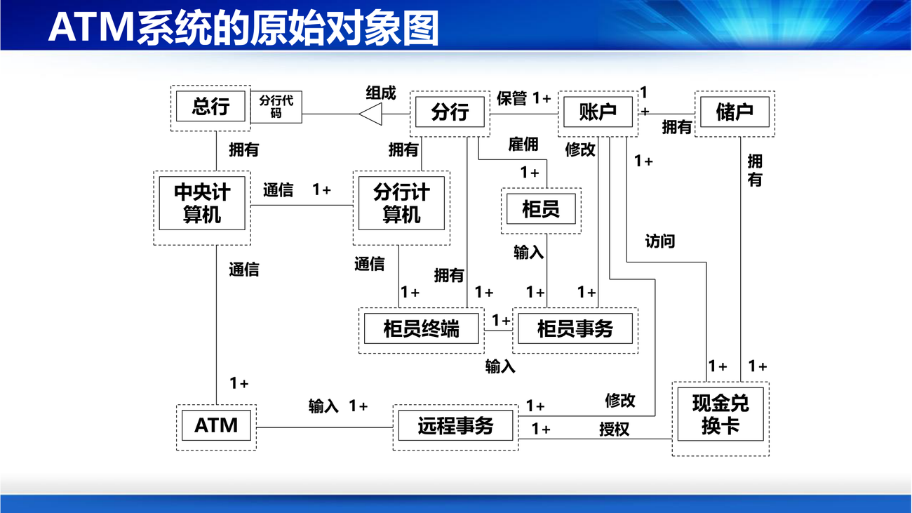
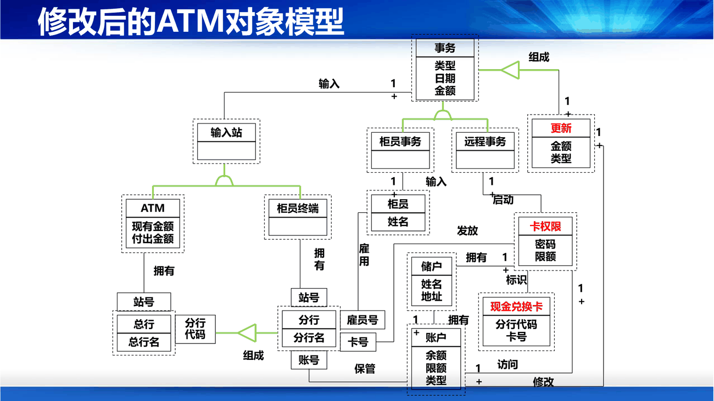

课件用第 58–84 页讲一个完整的银行 ATM 案例。这一节把方法抽出来，案例放在后面当演示。
课件第 59 页给了"客观事物的五类"，这是找类的第一把钥匙：
| 类别 | 例子 |
|---|---|
| ① 可感知的物理实体 | 飞机、汽车、书 |
| ② 人或组织的角色 | 医生、教师、雇主、计算机系 |
| ③ 应该记忆的事件 | 飞行、演出、交通事故 |
| ④ 两个或多个对象的相互作用（常有交易或接触性质） | 购买、纳税、结婚 |
| ⑤ 需要说明的概念 | 政策、保险政策、版税法 |
补第 ③④ 类是最容易漏的。新手建模往往只找"名词性实体"（人、设备、单据），漏掉"事件"——比如航空系统会漏掉"航班"（事件），只留下"飞机"和"机场"；电商系统会漏掉"订单"（事件），只留下"商品"和"用户"。判断标准：这件事有没有自己的属性（时间、金额、状态）？有，它就是类。
第二把钥匙：名词动词法（PPT 第 60 页）：
问题陈述 ──选取名词──→ 暂定的对象类 ──排除假类──→ 对象类
具体做法是：把需求陈述里
筛选：五条删类标准（PPT 第 61 页），这是最实用的部分：
| 标准 | 处理 |
|---|---|
| 冗余类 | 两个类表述同一信息，保留最富有描述能力的那个 |
| 不相干的类 | 与问题无关的，删掉 |
| 模糊类 | 边界定义模糊或范围太广的，删掉（类必须是确定的） |
| 属性 | 某些名词其实是别的对象的属性 → 从类里删掉（但若该性质独立性很重要，应升格为类） |
| 操作 | 名词带动作含义 → 不是类；但具有自身性质且需独立存在的操作，应描述成类 |
补"属性 vs 类"是这里最难的判断，课件给了一句很有用的判据："如果某一性质的独立性很重要，就应该把它归属到类，而不作为属性。" 举例：
课件第 62 页，规则简单但很见功力：
补命名不是小事。类名是这张图、这份文档、这段代码里出现频率最高的词，一个含糊的类名会让后面所有讨论都含糊。第 8 讲"程序设计风格"里讲变量命名，用的是同一个道理。
属性怎么找（PPT 第 63 页），课件给了七个提问角度，非常好用：
补第二条和第三条是配套的：同一个"学生"，在选课系统里要有"已修学分"，在门禁系统里只要"通行权限"——属性取决于这个系统要它承担什么责任，不是"现实里它有什么"。
服务怎么找（PPT 第 64 页）：服务是描述对象动态特征（行为）的一个操作序列，有名字、参数表、可见性（+ 公有、# 受保护、- 私有）和返回类型。分两类：
补"知道型"服务是最容易被忽略的一类，但它极其常见：getBalance()、isOverdue()、calculateTotal() 都是"知道型"——它们不改状态，只回答一个问题。如果一个类只有 setter 没有"知道型"方法，说明这个类的职责还没想清楚。
课件第 65 页把对象与外部的关系归成四种，这是把零散的类连成模型的关键：
| 关系 | 含义 | 用什么表示 |
|---|---|---|
| 一般—特殊关系 | 分类关系（继承） | 一般—特殊结构 |
| 整体—部分关系 | 组成关系 | 整体—部分结构（组装） |
| 静态连接关系 | 通过对象属性反映的联系 | 实例连接 |
| 动态连接关系 | 对象行为之间的依赖 | 消息连接 |
补注意这里用的是"结构"而不是 UML 的"关系"，因为这是传统的 OOA 术语。对照关系是：一般—特殊 ≈ 泛化；整体—部分 ≈ 聚合/组合；实例连接 ≈ 关联；消息连接 ≈ 依赖/顺序图里的消息。考试如果同时出现两套术语，按这个表换算即可。
第 1 步：找出关键词（PPT 第 69–71 页）
从 ATM 需求陈述中提取名词：银行、自动取款机、系统、中央计算机、分行计算机、柜员终端、网络、总行、分行、软件、成本、市、街道、营业厅、储蓄所、柜员、储户、现金、支票、账户、事务、现金兑换卡、余额、磁卡、分行代码、卡号、用户、副本、信息、密码、类型、取款额、账单、访问。
初步筛选后剩下 11 个：ATM、中央计算机、分行计算机、柜员终端、总行、分行、柜员、储户、账户、事务、现金兑换卡。
补被删掉的（软件、成本、市、街道、营业厅、副本、信息、访问……）几乎全是"属性、环境、或系统本身"。这一步的动作就是前面"五条删类标准"的实战。
第 2 步：确定关联（PPT 第 72 页）
关联的三个来源：①直接提取动词短语（"储户拥有账户"→ 拥有）；②需求陈述中隐含的关联；③根据问题域知识得出的关联。
ATM 初始对象图上出现的关联有：组成、保管、拥有、访问、通信、输入、修改、授权、雇佣，并且标上了多重性（1+、1、*）。

补"关联能帮助发现漏掉的类"：课件说得很好——"分析和确定关联，能促使分析员考虑问题域的边界情况，有助于发现那些尚未发现的类"。比如你画到"柜员—柜员终端"，就会想"柜员怎么登录？"于是发现"柜员事务"这个类。
第 3 步：划分主题（PPT 第 74–75 页）
把 ATM 系统划成三个主题：总行、分行、ATM。课件还诚实地补了一句："实际上，ATM 系统规模并不大，也可以不划分主题层。"
第 4 步：确定属性（PPT 第 76 页）
属性确定分分析（用名词词组找，如"汽车的颜色""光标的位置"）和选择（删掉不正确/不必要的）两步。选择时要防六种错误：
补第 2 条"链属性"是最经典的一类错误。学生借书，借书日期既不属于学生也不属于书，它属于"学生—书"这条关联。遇到"只属于某次关系、不属于两端"的属性，就该把这条关系升格为一个类（借阅记录）——这正是后面"反复修改"要做的事。
第 5 步：识别继承关系（PPT 第 78 页）
两条路径：
课件用"学生"举例演示了四轮迭代：先建研究生/本科生 → 归纳出"学生" → 再加专科生 → 再归纳出"大学生"（把本科与专科的共同点提上来）。
补这个例子说明继承是要"迭代出来"的，不是一次想清楚。第一版往往把公共属性重复写在每个子类里（学号、姓名、性别），第二版才发现该提上去。判断标准：如果两个类有三个以上相同的属性，就该考虑抽父类。
第 6 步：反复修改（PPT 第 80–81 页）
课件给了三处具体修改，每一处都有理由，非常值得学：
| 修改 | 理由 |
|---|---|
| 把"现金兑换卡"拆成"卡权限"和"现金兑换卡"两个类 | 它有两个相对独立的功能：既是鉴别权限的卡，又是获取分行代码和卡号的载体。拆开使每个类功能更单一 |
| 确认"事务"应当作为类（不是数据库事务，是客户办一次业务） | 一个事务包含对账户的若干次更新（取款/存款/查询），且有自己属性（类型、金额） |
| 把"分行"与"分行计算机"合并 | 它们在问题域中是一体的，分开建类只会增加无意义的通信 |
补这三处修改分别对应三条设计直觉：①一个类有两个独立职责 → 拆（这就是后来的"单一职责原则"，第 6 讲）；②有属性、有生命周期的事件 → 建类；③现实中不可分的东西 → 不要硬拆。它们是"内聚"概念在分析阶段的预演。
